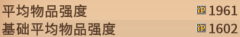
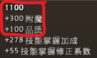
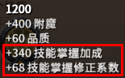

物品強度(ip)
平均物品強度(ip, Item Power)為身上6格裝備的ip取平均。(雙手武器會以兩格計算)
基礎平均物品強度計算方法同上，但會忽略掉天賦羅盤的ip加成，即無練度的情況下穿同樣裝備的ip。
單一物品的ip為: 基礎物品強度 + 技能掌握加成
基礎物品強度
即使你該物品沒有任何練度，仍然會有基礎物品強度。
技能掌握加成
技能掌握加成取決於該物品天賦羅盤上的外圈和內圈等級。T3或T3以下的物品，技能掌握加成為0。
技能掌握修正係數根據物品的階級會有不同的加成。(=技能掌握加成ip*加成比例)
| 階級 | 加成比例 |
| T4 | 0% |
| T5 | 5% |
| T6 | 10% |
| T7 | 15% |
| T8 | 20% |
計算
單個物品ip計算:
100
+0
+0
+0
+0
+0%
+0
= 100 ip
技能掌握加成的理論最高ip：
頭、甲、鞋為404(不包含採集裝)
武器及副手為380
編輯紀錄
作者: runnywolf
最後編輯日期: 2022/10/30